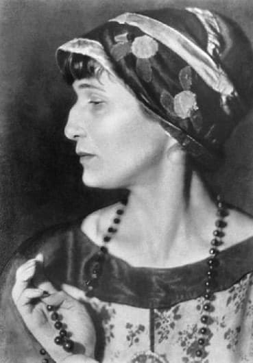

Анна Ахматова

«Вечер» – фирменная новелла Уже в стихотворениях своей первой поэтической книги «Вечер» (1912) Анна Ахматова выработала собственную, легко узнаваемую манеру. Вот названия некотороых стихотворений из творчества Ахматовой: «Я не любви твоей прошу...» «А ты теперь тяжелый и унылый...» «Сжала руки под темной вуалью...» «Мальчик сказал мне: «Как это больно...» «Двадцать первое. Ночь. Понедельник...» «Не с теми я, кто бросил землю...» «Я спросила у кукушки...» «Ты письмо мое, милый, не комкай...» «Я сошла с ума, о мальчик странный...»
Умерла Анна Андреевна в Подмосковном санатории 5 марта 1966 года. Была похоронена под Ленинградом на Комаровском кладбище. Именем Ахматовой названы улицы во многих городах бывшего СССР. Литературно – мемориальный музей Ахматовой находится в Фонтанном доме в Санкт-Петербурге. В этом же городе установлено несколько памятников ей. Мемориальные доски, в память о посещении города, установлены в Москве и Коломне.